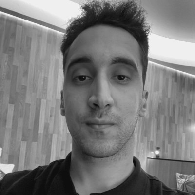
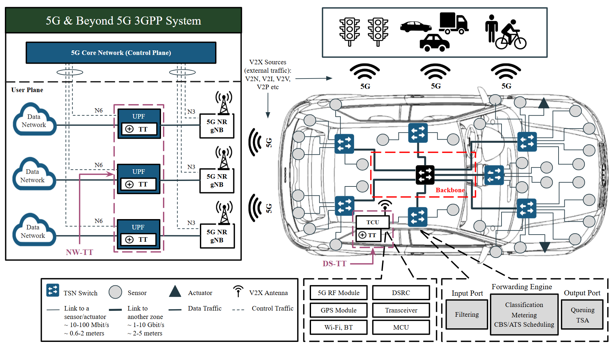
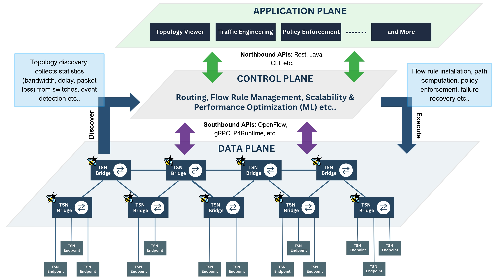
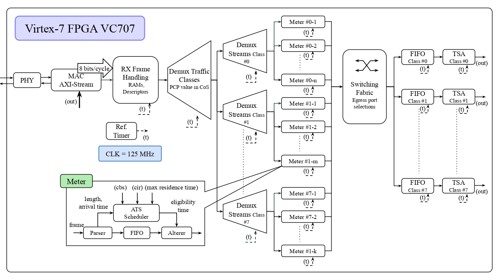
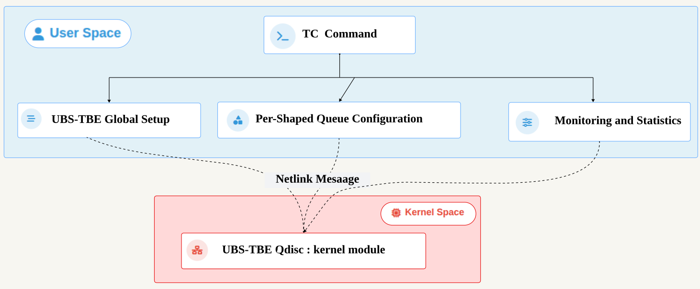
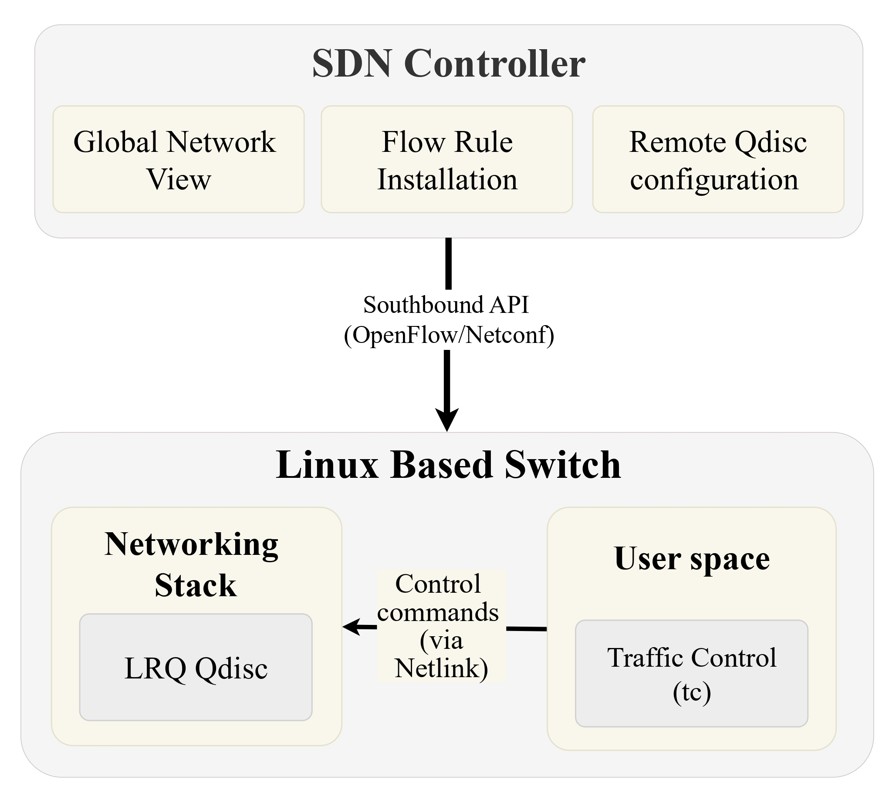
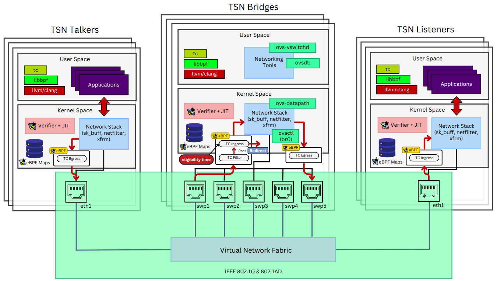
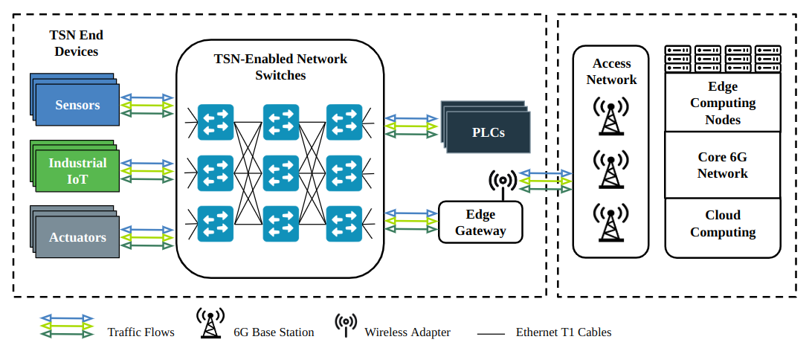
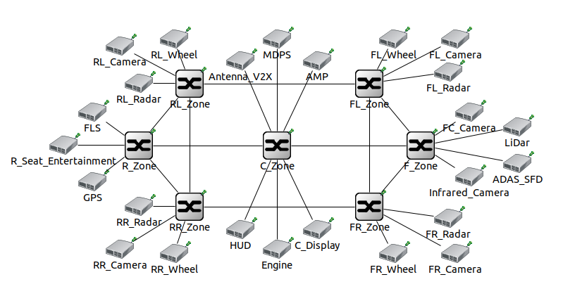

Abderrahmane Boulahdour

Université du Québec à Trois-Rivières
Trois-Rivières, QC, Canada
I am a Ph.D. student in Electrical and Computer Engineering at the Université du Québec à Trois-Rivières (UQTR), Canada, advised by Prof. Miloud Bagaa and co-advised by Prof. Messaoud Ahmed Ouameur. I received my M.S. and B.S. degrees from USTHB, Algeria.
My research focuses on Time-Sensitive Networking (TSN) and Software-Defined Networking (SDN) for the Cloud–Edge Computing Continuum. I work on bringing TSN from theory to real hardware, and on AI-assisted methods to optimize traffic shaping, scheduling, and path selection in large-scale networks.
News
| Sep 2026 | Our paper comparing CBS and ATS in zone-based in-vehicle TSN was accepted to Springer Journal of Network and Systems Management (JNSM). 🎉 |
| Sep 2026 | Our paper on software-defined TSN scheduling with eBPF was published in IEEE Transactions on Network and Service Management (TNSM). |
| Aug 2026 | Our TNSM paper was accepted, and our FPGA-enabled ATS paper was published at IEEE LANMAN 2026. |
| Jul 2026 | Two papers published: UBS-TBE in the Linux kernel at IEEE ICC 2026 and LRQ shaper for multi-hop SDNs at IEEE IWCMC 2026. |
| Apr 2026 | Our paper on FPGA per-stream processing for ATS was accepted to IEEE LANMAN 2026. |
| Mar 2026 | Our paper was accepted to IEEE IWCMC 2026, and our eBPF-driven ATS scheduler was published in the IEEE GLOBECOM 2025 proceedings. |
| Jan 2026 | Our paper on a Linux-kernel native UBS-TBE implementation was accepted to IEEE ICC 2026. |
| Jul 2025 | Our paper on an eBPF-driven ATS scheduler was accepted to IEEE GLOBECOM 2025. |
| Jun 2025 | Attended IEEE ICC 2025 in Montréal, Canada (June 8–12), where I presented our paper on queuing and shaping in TSN for future 6G networks. |
| Jun 2025 | Presented my research as a speaker at the 2025 Biennial Symposium on Communications (BSC 2025) in Sherbrooke, Canada (June 3–6). |
| Jan 2025 | Our paper on queuing and shaping in TSN for 6G was accepted to IEEE ICC 2025. |
| Sep 2024 | My first paper, on asynchronous TSN in automotive zone-based architectures, was accepted to IEEE LATINCOM 2024. |
| May 2024 | I started my Ph.D. at UQTR under the supervision of Prof. Miloud Bagaa. |
Education
| 2024 – Present |
Université du Québec à Trois-Rivières (UQTR), Trois-Rivières, QC, Canada Ph.D. in Electrical and Computer Engineering Advisor: Prof. Miloud Bagaa · Co-advisor: Prof. Messaoud Ahmed Ouameur |
| 2018 – 2020 |
University of Science and Technology Houari Boumediene (USTHB), Algiers, Algeria M.S. in Networks and Telecommunications |
| 2015 – 2018 |
University of Science and Technology Houari Boumediene (USTHB), Algiers, Algeria B.S. in Telecommunications |
Experience
| 2024 – Present |
Université du Québec à Trois-Rivières (UQTR) Ph.D. Student, TSN & SDN for the Cloud–Edge Continuum
|
| Jan 2023 – Aug 2023 |
Dependopolis Consulting, United Kingdom DevOps Junior Consultant
|
| Nov 2022 – May 2023 |
Visyond Ventures, United Kingdom DevOps Engineer (Part-time)
|
| Jun 2021 – Sep 2021 |
ADEX Technology, Algeria Cloud & DevOps Engineer
|
| Jul 2020 – Dec 2025 |
Fiverr, remote (profile) IT Engineer (Freelance)
|
Publications
2 journal articles and 6 international conference papers. See also Google Scholar.
Journal Articles
-
Springer JNSM

Comparative Evaluation of CBS and ATS Traffic Shaping in Zone-Based In-Vehicle TSN: An End-to-End Delay and Network Calculus Analysis Journal of Network and Systems Management (JNSM), 2026 · AcceptedThe modern automotive industry faces growing communication challenges driven by the increasing density of Electronic Control Units (ECUs) required for Advanced Driver Assistance Systems (ADAS), infotainment, and autonomous driving. In-vehicle networks (IVNs) are therefore transitioning toward Ethernet with Time-Sensitive Networking (TSN) as a unified backbone, enabling Vehicle-to-Everything (V2X) services built on 5G connectivity. However, conventional TSN synchronous operation becomes increasingly impractical in large-scale automotive environments. This paper investigates the integration of the Credit-Based Shaper (CBS) under synchronization and the Asynchronous Traffic Shaper (ATS) within a zone-based IVN architecture connected to a 5G V2X interface. A formal E2E delay analysis is developed, decomposing the delay into propagation and device-level components, and complemented by analytical worst-case delay bounds derived via network calculus to provide deterministic per-stream guarantees for both mechanisms. The evaluation is conducted under both store-and-forward (S&F) and cut-through (CT) switching modes using realistic in-vehicle traffic profiles. Results show that ATS delivers comparable E2E delay performance to CBS while operating fully asynchronously, positioning it as a scalable and practical alternative for next-generation zone-based IVN deployments. -
IEEE TNSM

Toward Software-Defined TSN Scheduling: An eBPF Approach for Stream Processing and Delay Analysis in Industry 5.0 IEEE Transactions on Network and Service Management (TNSM), 2026
Conference Papers
-
LANMAN

FPGA-Enabled Design for Per-Stream Processing in Asynchronous Traffic Shaping for TSN IEEE International Symposium on Local and Metropolitan Area Networks (LANMAN), 2026 -
ICC

Bridging Theory and Practice: Linux Kernel Native Implementation of UBS-TBE for Industry 5.0 IEEE International Conference on Communications (ICC), MWN Symposium, 2026 -
IWCMC

Length Rate Quotient Shaper for Deterministic Quality of Service in Multi-Hop SDNs IEEE International Wireless Communications and Mobile Computing Conference (IWCMC), WiSensors & IoT Symposium, 2026 -
GLOBECOM

eBPF-Driven ATS Scheduler: An Advanced Stream Processing Approach for Industry 5.0 IEEE Global Communications Conference (GLOBECOM), SAC – CECN, 2025 -
ICC

Flow Management Using Advanced Queuing and Shaping in TSN for Future 6G Networks IEEE International Conference on Communications (ICC), NGNI Symposium, 2025 -
LATINCOM

Asynchronous Time-Sensitive Networking (TSN) Implementation in Automotive Zone-Based Architecture IEEE Latin-American Conference on Communications (LATINCOM), 2024
Service and Teaching
Professional Service
- TPC Member, IEEE ICC 2026 – IoT & Sensor Networks Symposium
- TPC Member, IEEE ICC 2027 (upcoming)
- Reviewer, IEEE Transactions on Network and Service Management (TNSM), 2025 – 2026
Teaching & Supervision
- Teaching Assistant, GEI1091 – Réseaux informatiques, UQTR (Winter 2025)
- Supervisor, Bachelor's internship GEI1096 – Stage de génie informatique, UQTR (Summer 2026)
- Supervisor of two Master's students from the École nationale Supérieure d'Informatique (ESI), Algiers, Algeria (2024 – 2025), leading to two co-authored IEEE conference papers
Certifications & Skills
Professional Certifications
- Cisco CCNA
- Huawei HCIA
- Juniper JNCIA (Junos, Design, DevOps, Cloud)
- Microsoft Azure Cloud
- Linux Foundation – Kubernetes (cloud-native)
Research & Technical Skills
- TSN: IEEE 802.1AS (gPTP), IEEE 802.1Qcr (ATS), IEEE 802.1Qbv (TAS), IEEE 802.1Qav (CBS), QoS
- SDN: network automation, OpenFlow, P4, SDN controllers (ONOS, Ryu), NFV, network programmability
- Systems: eBPF, Linux kernel networking, embedded Linux
- Networks: industrial communications, edge–cloud continuum, network architectures
- AI: artificial intelligence, machine learning, deep learning, reinforcement learning, neural networks, graph neural networks
- Analysis & optimization: network calculus, delay analysis, queueing theory, integer linear programming (ILP), heuristic and metaheuristic optimization